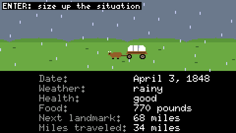
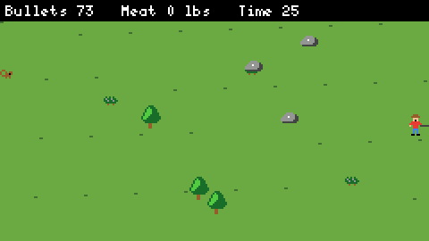
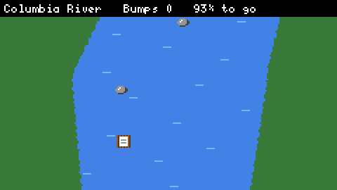
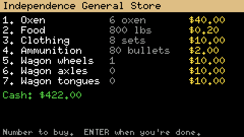
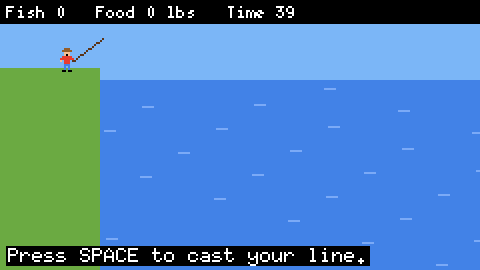
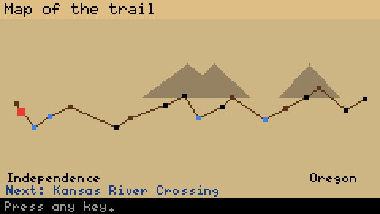
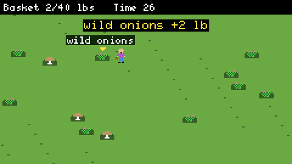
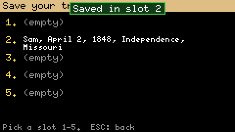

2,000 miles of trouble
It's 1848. You buy oxen and flour in Independence, Missouri, and point your wagon at Oregon's Willamette Valley. Seventeen real landmarks, from the Kansas River to The Dalles, every mini-game you remember, and a new one: gathering wild food that changes with the place and the season.








Two kinds of pioneers
Pick who's playing when the game starts. Same trail, same choices; only the bad news is different.
Younger pioneers
Nobody dies. People get tummy aches instead of dysentery, and anyone too sick to go on rides home with a kind family.
"Mary has a tummy ache."
Seasoned pioneers
The trail as it really was: cholera, deep rivers, and a tombstone by the trail for anyone you lose.
"Mary has died of dysentery."
Built to be hacked
Made for a kid who loves computers. Go from cheat codes, to modding the trail, to changing the Rust code, one step at a time.
> whoami pioneer (level 1 hacker) > give food 500 Added 500 food. Shhh... > theme green > matrix_
Press ` in the game for a hidden terminal. Cheat if you like, but the Top Ten marks hackers with [H].
# make buffalo enormous [animal] name = buffalo min_lbs = 4000 max_lbs = 5000 [landmark] name = My Secret Base mile = 400
The whole trail is a text file. Open the Mod editor above, change it, press Apply.
// b brown w white k black
"....wwwawwwwawwwww....",
"..wwwwwawwwwawwwwwww..",
".bbbbbbbbbbbbbbbbbbbb.",
"bbbbbbbbbbbbbbbbbbbbbb",
"..kkk..........kkkk...",
".kBaBk........kBaaBk..",
Every picture is drawn with letters. Change a letter, rebuild, and the wagon changes.
Start with the hacking guide.
Fits in your pocket
The game was made for the M5Stack Cardputer, a tiny computer the size of a credit card with a keyboard and a 240×135 screen. The browser version runs the same Rust code at the same resolution, scaled up.
- Install Rust for the ESP32:
cargo install espup espflash ldproxy, thenespup install. - Plug in the Cardputer. If your computer doesn't see it, hold G0 while you plug it in.
- In
firmware/, runcargo run --release. For the Cardputer ADV, add--features adv. - On the device, Fn + ; . , / are the arrow keys, and Fn + P saves a screenshot to the SD card.